Enna: Enna liegt auf rund 930 m und gilt als „Nabel Siziliens" – die höchstgelegene Provinzhauptstadt Italiens mit Blick über das ganze Inselinnere. Der achteckige Torre di Federico wird Kaiser Friedrich II. zugeschrieben.
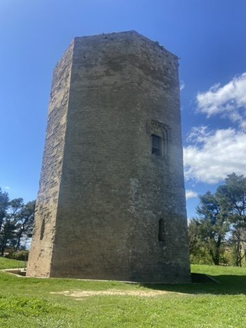
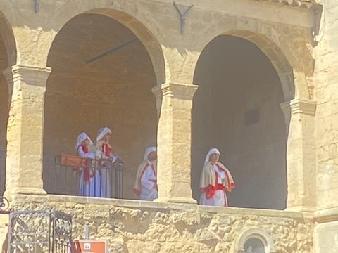
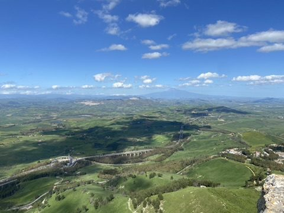
Die Karfreitagsprozession: Der Karfreitag ist in Enna der Höhepunkt des Jahres. Die Tradition geht auf die spanische Herrschaft zurück: Tausende Mitglieder der Bruderschaften ziehen in Kutten und spitzen Kapuzen, jede Bruderschaft in eigenen Farben, schweigend durch die Stadt. Sie tragen die Urne mit dem toten Christus und die Figur der Madonna Addolorata vom Dom durch die Via Roma. Es ist eine der eindrucksvollsten Karwochen-Prozessionen Italiens.
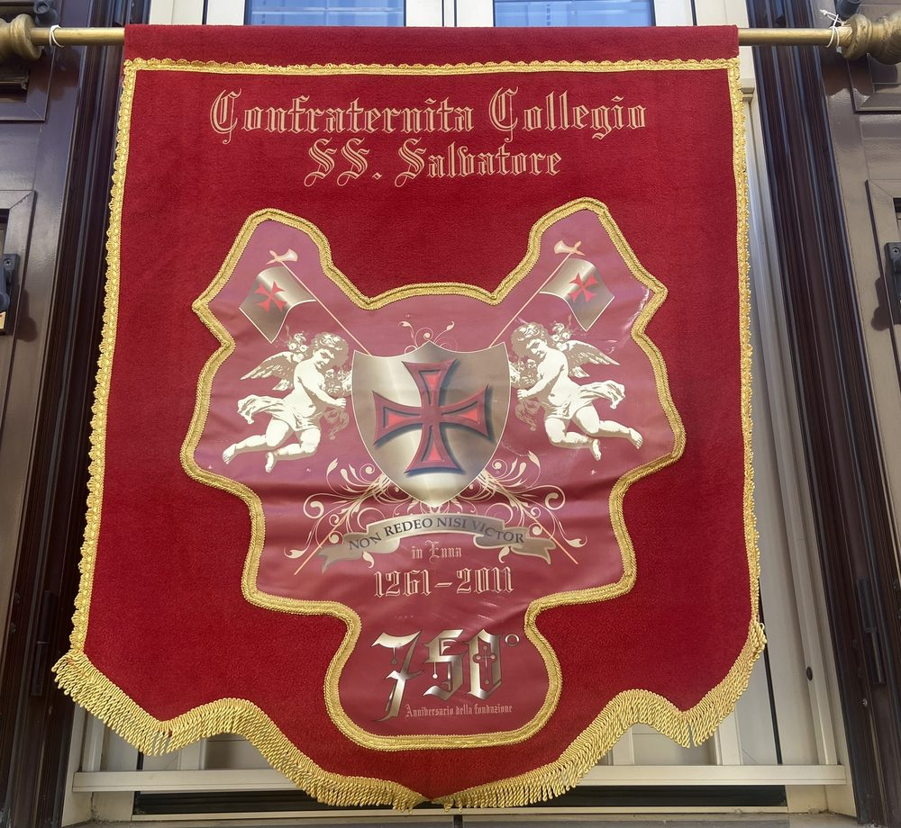
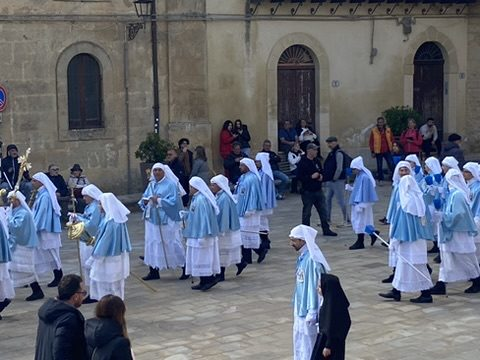
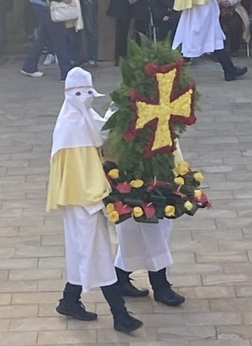
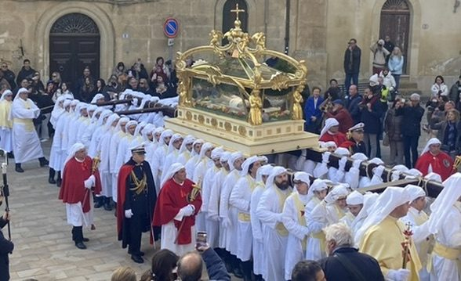
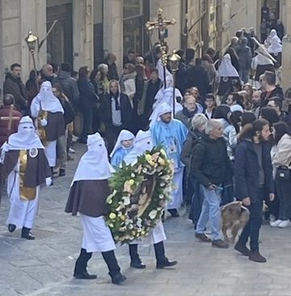
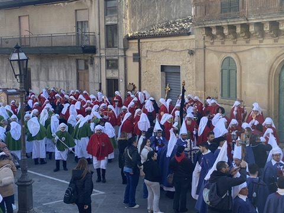
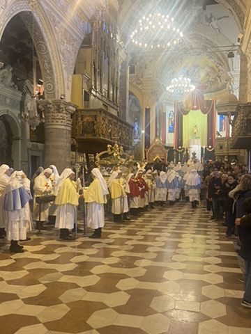
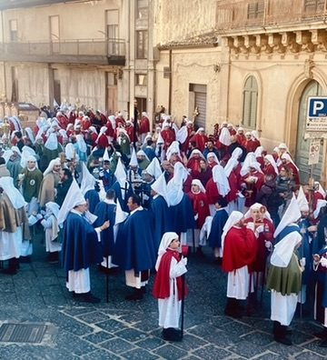

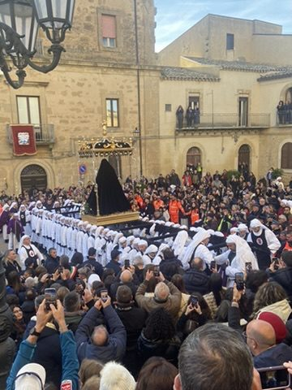
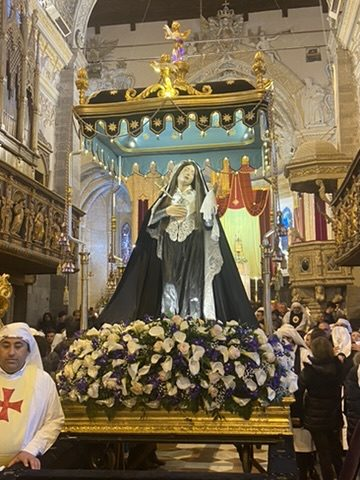